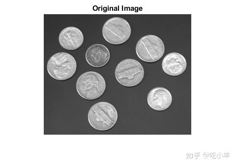

Home
本示例说明了如何应用imfilter函数，使用包含相等权重的5×5滤镜（通常称为平均滤镜）对2D灰度图像进行滤波。该示例还显示了如何使用相同的滤镜对真彩色（RGB）图像进行滤波。真彩色图像是大小为[m,n,3]的矩阵，其中最后一维表示三个颜色通道。使用2-D滤镜滤波真彩色图像等效于使用相同的2-D滤镜分别滤波图像的每个平面。
有几种执行2D和多维滤波的MATLAB®函数可以与imfilter进行比较。函数filter2执行二维相关，conv2执行二维卷积，convn执行多维卷积。但是，这些滤波功能中的每一个始终将输入转换为double，而输出始终为double。同样，这些MATLAB®滤波函数始终假定输入为零填充，并且不支持其他填充选项。相反，imfilter不会将输入图像转换为double。该imfilter功能还提供了一组灵活的边界填充选项。
使用均值滤波器滤波二维灰度图像
将灰度图像读取到工作区中。
I = imread('coins.png');
显示原始图像。
figure
imshow(I)
title('Original Image')

创建一个标准化的5×5均值滤波器。
h = ones(5,5)/25;
使用imfilter，将均值滤波器应用于灰度图像。
I2 = imfilter(I,h);
显示滤波后的图像。
figure
imshow(I2)
title('Filtered Image')
使用imfilter滤波多维真彩（RGB）图像
将真彩色图像读入工作区。
rgb = imread('peppers.png');
imshow(rgb);

创建一个滤波器。该均值滤波器包含相等的权重，并使滤波的图像看起来比原始图像更加模糊。
h = ones(5,5)/25;
使用imfilter滤波图像并显示。
rgb2 = imfilter(rgb,h); figure imshow(rgb2)
======================================================================
我的测试结果及程序
下面是我测试的代码：

注：本文根据MATLAB官网内容修改而成。